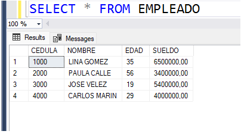
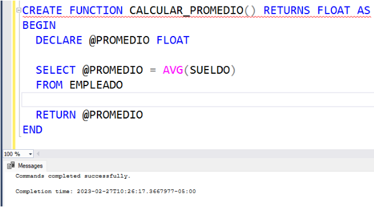
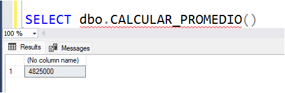
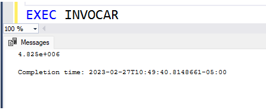

Las funciones escalares son aquellas que retornan un valor, es decir, un número, un string, una fecha, etc.
Supogamos que tenemos la tabla EMPLEADO, con los siguientes datos:

Si nuestra lógica implica, por ejemplo, calcular el sueldo promedio de todos los empleados, podríamos pensar en hacer una función escalar.Tener en cuenta que el sueldo promedio de todos los empleados es UN dato numérico.
La manera de hacerlo es a través de la siguiente programación:

A continuación se da una explicación detallada de la lógica anterior:
- Se crea una función llamada CALCULAR_PROMEDIO.
- La función no recibe parámetros (esa es la razón de los dos paréntesis abierto y cerrado ( () ), sin nada adentro). Las funciones, al igual que los procedimientos almacenados, pueden recibir parámetros. Dichos parámetros irían dentro de los paréntesis mencionados.
- La función va a retornar un valor numérico, de tipo flotante. Toda función escalar debe tener la cláusula RETURNS en el CREATE FUNCTION, especificando el tipo de dato que va a retornar la función.
- La lógica de la función debe estar dentro de las cláusulas BEGIN y END.
- Se declara una variable, de tipo flotante, llamada PROMEDIO.
- Se selecciona el promedio de sueldos de todos los empleados, y este promedio se almacena en la variable PROMEDIO, previamente declarada.
- Al final de la lógica de la función, se retorna el valor que hay en la variable PROMEDIO, es decir, el promedio de sueldos de todos los empleados.
Quién recibe el valor retornado por una función?
Si una función tiene como misión retornar un valor, significa que una función no se ejecuta directamente. Una función se invoca desde otro programa o instrucción.
Por ejemplo, la anterior función pudiera ser invocada por una instrucción SELECT de la siguiente manera:

Lo que hace la anterior instrucción es invocar la función para que ella sea ejecutada, y recibir el sueldo promedio de los empleados e imprimirlo.
La función también podría ser invocada desde un procedimiento almacenado, desde otra función y/o desde un trigger.
Por ejemplo, desde un procedimiento almacenado, la función podría ser invocada de la siguiente manera:

El anterior procedimiento declara una variable, llamada SUELDOPROM de tipo flotante, en la cual se almacena lo retornado por la función. La instrucción SET lo que hace es invocar la función, y recibir lo que retorna la función en la variable SUELDOPROM. Posteriormente, dicha variable se imprime.

Al ejecutar el procedimiento, sucede lo esperado. El sueldo promedio de todos los empleados se imprime.
Video: